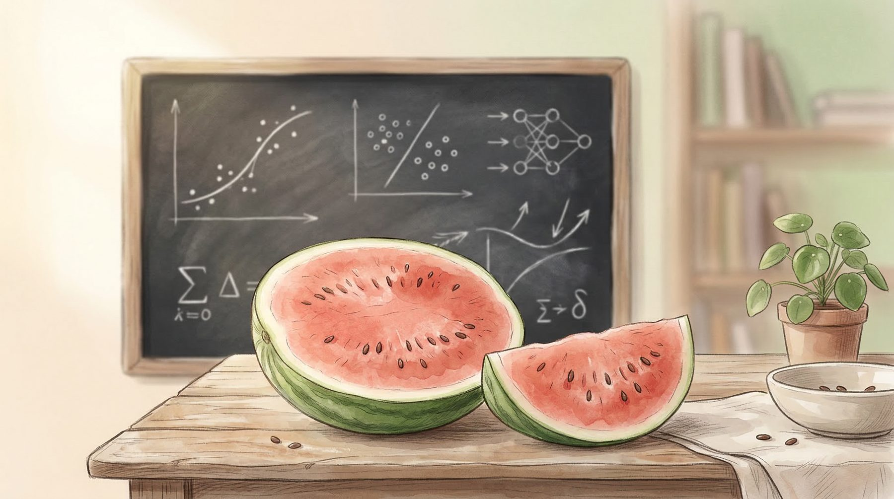
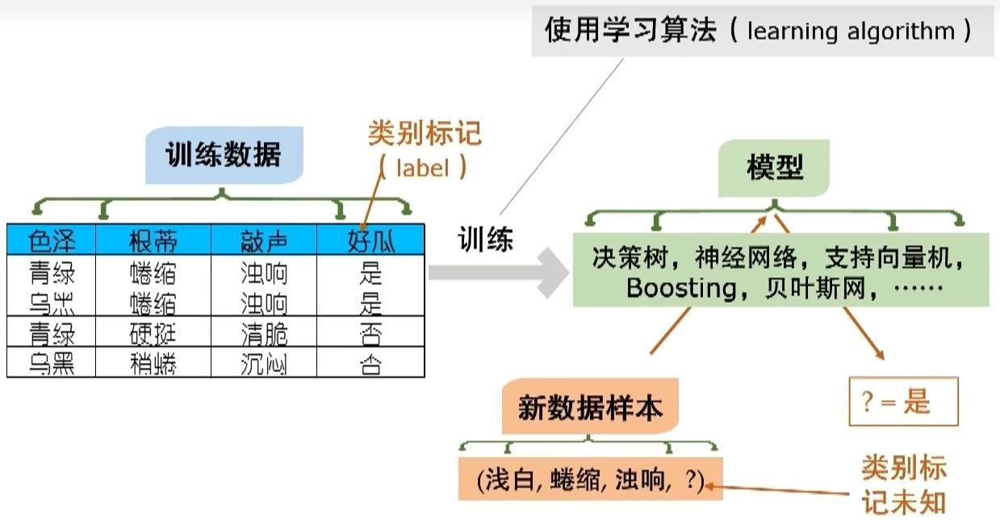

《西瓜书》
一、绪论
典型机器学习过程
{kind=link}

机器学习研究的主要是学习算法的设计、分析和应用。不同的学习算法会得到不同的模型，因此也要研究模型的性质。不同的输入数据也是影响因素之一。
学习过程可以看作是在所有“假设”形成的假设空间中搜索一个匹配所有训练数据的假设，即能够将训练集全部判断正确的假设。在现实世界中，可能有多个假设与训练集保持一致，即存在一个与训练集一致的假设集合。在多个能成功判断训练集的假设存在时，算法可能对其中某几个属性更为看重，因此选择了某个具体的模型，这种机器学习算法在学习过程中对某种类型假设的偏好称为“归纳偏好”。如果有多条曲线都能经过样本点，那么模型一般选平滑的那个，这个“选择”的动作，就是“归纳偏好”，至于为什么选平滑的那个，是因为我们一般认为“相似的样本会得到相似的输出”（奥卡姆剃刀）。
感觉和我妈教我买菜很像，她说“你看这个就是韭黄”，但是我看不出区别。我记下的是“颜色是黄色的，根部大概这么长……”这些属性，下次再要我买菜的时候，我也是按这些属性能否匹配来确定眼前这根草到底是不是韭黄。如果有很多根草都符合上述要求的话，我就要开始纠结了。但我觉得韭黄至少肯定是黄色的吧，所以我会选择黄色的那根符合条件的草，这就是我的“归纳偏好”。
对于世界上所有的问题集合，任何算法（包括“随机乱猜”算法）的性能可以说都“一样好”或者“或者一样差”（“没有免费的午餐”定理NFL）。这告诉我们，脱离实际问题空谈“哪个学习算法更好”毫无意义，要讨论学习算法的好坏，必须要结合具体的问题场景。有些算法在具体问题上可能表现很好，但在其他问题上表现不佳。学习算法的自身归纳偏好和问题是否匹配，往往起到决定性作用。
示例：指所有输入特征，不包含标签
样例：指所有输入特征，包含标签
测试数据中，全是样例（有标签）就是监督学习；全是示例（无标签）就是无监督学习
计算复杂度理论
- P：容易在多项式时间内求解的问题
- NP：容易在多项式时间内验证的问题（数独）
- NP-hard / NP-complete：难以在多项式时间内验证的问题
启发式算法
对于某些极难直接求解的NP-hard问题，直接求解的时间花费是一个天文数字。相比于直接找到全局最优解，启发式算法会根据经验和直觉，往一个可能有较好解的方向搜索，其目的是找到一个「足够好」的解而不是「最优解」，但这也可能会使它陷入到局部最优。
贪心算法，每步都取局部最优，有理由相信最终结果是一个接近全局最优的解。
监督学习和无监督学习：根据训练数据有无标记信息区分。分类和回归是监督学习的代表，聚类是无监督学习的代表。
分类和回归：模型预测离散值则为分类；模型预测连续值则为回归
聚类和分类的区别：分类属于监督学习，本质上是预测离散值，即根据训练数据中的输入属性和输出标签的对应关系，训练出对于新样本的标签的预测模型。聚类属于无监督学习，它的训练数据中不含标签，训练目的是将新样本划分为不同的簇。
归纳和演绎：归纳是从特殊到一般，演绎是从一般到特殊。模型学习实际上是归纳的过程。
人工智能 | 归纳学习（从样例中学习）
- 符号主义学习：最开始认为只要赋予机器以逻辑推理能力就能实现智能，后来发现还要让机器拥有大量知识。实现方式上是以人工输入给机器大量的if…else。优点是明确的概念和推理过程。但复杂程度高，假设空间太大，问题规模稍大就难以学习。
- 决策树：信息熵
- 基于逻辑的学习：谓词逻辑
- 连接主义学习：起源于对人类神经元的模仿，是个黑箱。催生了机器学习。
- 神经网络
- 深度学习：很多层的神经网络
- 行为主义：认为智能不需要知识表示，也不需要模拟神经元，而是在于与环境的交互和反馈（像昆虫一样通过感知做出反应）
- 统计学分支：支持向量机、贝叶斯
二、模型评估与选择
| 数据集 | 形象类比 | 主要功能 |
| 训练集 (Training Set) | 课本、练习题 | 用于训练模型，让模型通过这些数据学习特征、规律和参数（如权重和偏置）。 |
| 验证集 (Validation Set) | 模拟考试、周测 | 在训练过程中使用，用于调整模型的超参数 （如学习率、网络层数等）和选择模型，监控是否出现过拟合。验证集是模型间接见过的数据，不能用于估计模型泛化能力。 |
| 测试集 (Test Set) | 正式高考 | 在模型全部开发完成后使用，用于评估模型在“未见过的数据”上的最终泛化能力。 |
模型评估
我们希望得到的是用数据训练出的模型，而不是训练集训练出的模型。
- 留出法：
- 将数据集划分为训练集和测试集。
- 划分数据集的时候要注意分层采样。
- 训练集越多越接近于“用训练出的模型”。训练集少可能导致高偏差（欠拟合），测试集少可能导致高方差（过拟合），这是一个trade-off
- 交叉验证法：
- 将数据集按分层采样划分为个互斥子集，每次选一个子集作为测试集，其余子集的并集作为训练集，这样一共能训练出个模型，再使用不同的划分重复训练次，最终的模型评估结果是“次折交叉验证”的均值。
- 每个子集只包含一个样本时，称作“留一法”，这是交叉验证法的特例
- 留一法的训练集与数据集只相差一个样本，这样的评估结果被认为相对准确
- 留一法相当于为每个样本都训练了“专属模型”，当样本太多时这样做开销太大
- 自助法（适用于小样本）
- 假设数据集有个样本，每次从中复制一个样本到训练集，重复次，已被复制的样本下次还有机会被复制。
- 数学计算得出再经过次复制后，与都有个样本，且中约有个样本是中没有的，这部分样本用作测试集。这样的测试结果称作“包外估计”
- 自助法在数据集较小，难以划分时很有用。但是这改变了初始数据集的分布，会引入估计偏差。
- 作用：减少训练样本规模不同造成的影响，同时还能比较高效地进行实验估计
性能度量
- 预测任务
- 均方误差
- 分类任务
- 错误率 / 精度
- 查准率P（准确率）：预测为真的样本中，真正为真的样本的占比（减少冤假错案）
- 查全率R（召回率）：真正为真的样本中，预测为真的样本的占比（宁错杀一百不放过一个）
- PR图：纵轴查准率，横轴查全率
- 平衡点BEP：是P-R图中，查准率=查全率的点
- F1：查准率和查全率的调和平均
- 真正例率：真正为真的样本中，预测为真的样本占比
- 假正例率：真正为假的样本中，预测为真的样本占比
- ROC：横轴假正例率，纵轴真正例率，设置不同的阈值描点连接
- AUC：ROC曲线下面积
- 混淆矩阵：是一种用于评估二分类或多分类模型性能的工具，它通过 展示模型的分类结果与实际标签之间的关系 来帮助分析模型在不同类别上的表现
某种度量下取得评估结果后，不能直接用于比较模型优劣，因为
- 测试性能不等于泛化性能
- 测试性能随测试集变化而变化
- 机器学习算法本身具有随机性
比较检验
- k折交叉检验t检验：两个学习器各进行k次测试得到各自的k个误差，两两相减得到k个误差之差，如果这k个误差之差的均值和误差小于临界值，认为两学习器没有明显区别
偏差-方差分解
适用于以平方误差为标准的回归问题

过拟合发生在上图x轴右方，即当训练程度非常大的时候，模型学习到的是数据内部扰动的变化，而不是一般规律
泛化误差可分解为偏差、方差和噪声之和
- 偏差：指模型预测结果和真实结果的偏离程度，刻画了学习算法的拟合能力
- 方差：指同样大小的训练集变动导致的学习性能的变化，刻画了数据扰动造成的影响。学习算法本身具有随机性，每次算出来的结果可能有微小区别。
- 噪声：刻画了学习问题本身的难度，是当前问题下所有学习算法能达到的期望泛化误差下限（最小误差）。噪声的存在本质是因为训练样本的标记和真实标记有区别。
三、线性模型
回归：线性回归、多元线性回归、广义线性模型、对数几率回归
分类：线性判别分析、多分类（一对一、一对多、多对多）、类别不平衡问题（再缩放）
四、决策树
划分属性选择
- 信息增益（ID3算法）

按属性取值不同划分子结点，划分属性的选择标准是划分后使得分支结点所包含的样本尽可能属于同一类别，即纯度越高，也即信息熵越低。数据集的信息熵越低，说明将该数据集完全分类所需要的额外信息越少。
ID3在属性划分前，对每种可选的属性计算其信息增益，信息增益越大，意味着使用该属性来划分后的纯度提升越大。信息增益可以看作划分前后集合的信息熵的差。
- 增益率（C4.5算法）
事实上，信息增益准则对那些可选属性值较多的属性具有偏好，因为按这些属性来划分能得到更纯的结点（比如按序号分个结点是最纯的，但毫无泛化能力）。因此改用增益率来选择最优划分的标准，增益率大致上等于信息增益除以可选属性值个数。
但是增益率准则又对可选属性值较少的属性有偏好，因此C4.5决策树算法（一个具体的决策树算法）采用启发式算法，即先选那些信息增益高于平均水平的属性，再在其中选择增益率最高的属性。
- 基尼值（CART决策树）
也可以按基尼值来度量纯度，基尼值反应了从数据集中随机抽取两个样本，其类别标记不同的概率，基尼值越小，纯度越高。因此选择那个划分后能使基尼值更小的属性。
剪枝处理
有时决策树学习能力太强导致分支过多，造成过拟合，剪枝是处理决策树过拟合的方法。剪枝分为：
- 预剪枝
- 做法：划分前估计本次划分能否带来泛化性能的提升（性能评估方法）？如果不能，则停止划分，标记当前结点为叶结点。
- 优点：预剪枝能尽量减少不必要的分支，这降低了过拟合风险，还减少了决策树的训练时间
- 缺点：虽然本次划分不能提高泛化性能，但基于本次划分的下一次划分可能提高泛化性能，预剪枝的“贪心”算法带来了欠拟合的风险。
- 后剪枝
- 做法：先训练出一颗完整的决策树，然后自底向上地对非叶结点做考察：如果此结点所对应的子树合并为一个叶结点能带来泛化能力的提升，那么将该子树替换为叶结点。
- 优点：后剪枝比预剪枝保留了更多的分支，通常泛化性能更好
- 缺点：后剪枝在生成完全决策树后进行，训练时间比未剪枝和预剪枝都要大
连续值处理（C4.5做法）
如果属性是连续值，比如身高。假定数据集上有个不同的身高取值，那么就有了个区间，设阈值在某个具体区间内任意点处都不影响划分结果，因此阈值有种取法，考虑这种取法中信息增益最大的那个阈值即可。
缺失值处理
如果样本有缺失值，那么：
- 如何选择划分属性？（缺失值无法参与划分属性的信息增益计算）
- 确定了划分属性后，对应属性缺失的样本应如何分类？
解决办法：样本赋权，权重划分
- 问题一：计算属性信息增益时，乘上“无缺失值样本占比系数”

- 问题二：按照有属性的样本中不同属性的占比，将所有属性缺失的样本按先前权重比例同时加入所有分类

多变量决策树
每个结点不是单属性值的区分，而是多个属性的线性组合。
更复杂的“混合决策树”可以在结点中嵌入其他非线性模型或者神经网络，这样就构成了一个树形神经网络。相对应的，如果把一个神经网络不断的简单化，离散化，它就变成一个树。
五、神经网络
单层感知机（两层神经元）、多层前馈神经网络、
BP算法（多层前馈神经网络的学习方法）：
- 标准BP：每次针对一个训练样例更新连接权和阈值；更新频繁，不同样本的更新效果可能相互抵消
- 累计BP：读取整个训练集后才更新参数，目标是整个训练集的累计误差最小化；更新频率低，但累计误差下降到一定程度后，进一步下降缓慢，此时需要使用标准BP
过拟合
- 早停：当训练集误差降低，但测试集误差升高时停止训练
- 正则化：在误差目标函数上加一个用于描述网络复杂程度的部分（比如连接权和阈值的平方和），正则化系数表示模型在减小误差和增大泛化能力之间的偏好。从而使网络输出更加光滑，减少过拟合。
全局最小和局部最小
标准梯度下降法可能会陷入到局部最小，无法达到全局最小，为此有几种启发式算法：
- 撒豆子（多个初始值）
- 退火算法：算法每次迭代有一定概率选取次优解，以跳出局部最小，这个概率随时间减小，以保证模型收敛
- 随机梯度下降：计算梯度时加入随机因素，导致在局部最小处梯度仍不为0，从而有机会跳出局部最小
- 遗传算法
其他神经网络
- RBF网络：
- 属于监督学习，适用于回归任务。使用径向基函数作为隐藏层激活函数，输出层输出是隐藏层输出的线性组合。
- 径向基函数定义为样本到数据中心的欧氏距离（空间上点到球心距离）。
- 训练步骤是先确定样本中心（通过聚类或随机采样），再利用BP算法确定参数。
- “球”将逐渐靠近并包含本类样本
- ART网络：
- 属于无监督学习中的竞争性学习的代表，解决了可塑性-稳定性窘境，可进行增量学习
- 网络分为比较层（输入层）和识别层（隐藏层），识别层中每个神经元对应一个模式类（某个类别的子类）
- 识别层每个神经元接收到来自比较层的输入向量后，会和自己所对应的模式类的代表向量计算向量距离，距离最近的神经元获胜并被激活，它抑制同一识别层的其他神经元的激活。
- 若输入向量与获胜神经元对应的类别的代表向量的相似程度大于阈值，那么输入向量被分类到这个模式类，并更新网络连接权，下次在收到相似的输入样本时，该模式类会计算出更大的相似度；如果小于阈值，那么重置模块会在识别层增设一个神经元，这个神经元的代表项链就设置为输入向量。
增量学习是指在学得模型后，再接收到新样例时仅需根据新样例对模型进行更新，无需重新训练模型，先前学习到的有效信息不会被“覆盖”；在线学习是每获得一个新样本就进行一次模型更新，在线学习可看作是增量学习的特例，增量学习可看作在线学习的“批处理”。
- RNN递归神经网络
- 与前馈神经网络FNN不同，递归神经网络RNN允许网络中出现环状结构，即可以让一些神经元的输出反馈回来作为输入信号
深度学习
- 诞生：理论上，参数越多、越复杂的模型能完成更复杂的学习任务，但是复杂模型的训练效率低，容易过拟合。由于近年来可训练数据量和计算能力的提高，可以减少复杂模型的过拟合。
- 增加隐藏层个数：相比于增加各层神经元的个数，深度学习选择增加神经网络的层数，因为这样能同时提高神经元个数和激活函数嵌套层数。
- 训练问题：标准BP算法难以用于深度学习网络训练，因为误差在多隐藏层内反向传播时，往往会发散而不能收敛；由于sigmoid函数性质（01化），反向传播时梯度会越来越小，多层反向传播之后出现“梯度消失”
- 训练方法：
- 无监督逐层训练：遵循分而治之的思想，每次训练一层隐藏层，称之为预训练，所有隐藏层的预训练完成后再对整个网络微调（深度信念网络DBN）
- 权共享：让一组神经元使用相同的连接权。比如卷积神经网络CNN的每层中有多个“特征映射”，每个特征映射都是一个或多个神经元组成的“平面”，他们使用相同的连接权。
卷积神经网络CNN的输入层后是多个卷积层和采样层（汇合层）交替复合连接而成，最后连接一个全连接神经网络（连接层和输出层）。每个卷积层和采样层都包含多个“特征映射”，这是由一个或多个神经元组成的“平面”。卷积层负责从上一层（通常是输入层或采样层）提取局部特征，采样层的作用是基于局部相关性原理，从上一层卷积层中进行亚采样，从而在减少数据量的同时保留有效信息，做到特征的提纯。卷积层和采样层的不断叠加实际上可以看作是对输入数据的逐层加工，将“低层的”、不太明显的特征表示转化成“高层的”特征表示，提纯特征、减少噪声，这样，最后一层只需要做一个简单的逻辑分类即可完成原本难以实现的任务。
六、支持向量机

- 逻辑回归像是一个“及格主义者”。只要能把豆子分开，它就满足了。哪怕这条线紧贴着某颗豆子，随时可能因为抖动（噪声）而分错，它也不在乎。
- SVM 则是一个“完美主义者”。它不仅要把豆子分开，还要在两类豆子之间开辟出一条最宽阔的无人区（高速公路）。
支持向量：距离超平面最近的几个异类样本
间隔：两个异类支持向量到超平面的距离之和
目标：寻找距离最大的超平面作为决策边界，此时鲁棒性最大
支持向量机解的稀疏性：训练完成后，最终模型仅与支持向量有关
正类样本的约束：如果属于正样本，那么它必须位于“正边界”及其上方：
负类样本的约束：如果属于负样本，那么它必须位于“负边界”及其下方：
正类支持向量所在的超平面：
负类支持向量所在的超平面：
间隔区：
SVM的优化过程，就是在努力寻找和，使得在满足上述所有规则（约束条件）的前提下，这两条边界线（正类边界和负类边界）之间的距离（间隔）最大化。
根据距离公式，可知间隔与成反比，因此最大化间隔可以转化为最小化
支持向量机的求解方法——SMO：
- 选取一对需要更新的变量和
- 固定和以外的参数，求解对偶问题更新和
- 重复上述步骤直到收敛
感觉“启发式方法”就是指那些直觉上感觉效果最好的方法
特征空间映射
如果不存在能将两类样本正确划分的超平面，那么将样本从原始空间映射到更高维的特征空间，使得样本在这个特征空间内线性可分。可以证明如果原始空间是有限维（属性数有限），那么一定存在高维特征空间使样本线性可分
因此存在一种将样本映射到高维可分的映射，进而求解的最小值，但跟据拉格朗日乘数法，求解最小值需要计算，而高维向量的内积计算是复杂的。
核函数
想到如果找到一种核函数能描述高维化后与的距离关系，那么可以直接在低维对核函数求解，简便计算。核函数要表示高维化后两点的距离关系，那么它的核矩阵必须是半正定的（距离矩阵）
不同的核函数代表不同的低维空间到高维空间的映射，尽管他们都能将原始空间内不可分的问题变得可分，但无法直接找到最优那个映射，因此核函数的选择对支持向量机的性能至关重要
软间隔
有时找不到能将样本分类干净的核函数，或者因为过拟合，所以引出“软间隔”，即允许一些样本不满足约束
替代损失函数的一致性问题：使用前要确保替代损失函数的的解仍是原函数的解
常用损失替代函数有：hinge损失、指数损失、对率损失
若使用hinge损失并引入“松弛变量”（单个样本的hinge损失函数值），就是常用的“软间隔支持向量机”
结构风险（正则化项）：描述模型的复杂程度，这一项的存在是惩罚过于复杂的模型，减少过拟合
经验风险：简单说就是模型在训练集上的平均损失。
西瓜树将结构风险+经验风险的整体称作带结构风险，另一种说法是这个整体叫做结构风险
模型训练的目的是实现结构风险+经验风险的整体的最小化

统计学上的“正则化”相当于贝叶斯中的“先验”，即模型建模前预期得到的效果
表示定理指出，优化问题的最优解都可以表示为核函数的线性组合
低维空间上难以解决的问题可以通过映射到高维空间的方式解决，但是这个映射方式难以确定，因此引入核函数（这个操作叫做“核化”）的方式来隐式的表达这个映射和升维后的特征空间，通过这个方法，可以将低维的线性学习器扩展到高维的非线性学习器
核技巧是机器学习中处理非线性问题的基本技术，就是不断的试验哪个核函数是效果最好的
七、贝叶斯分类器
贝叶斯决策论
对于一个分类问题，一个具体的样本属于个类别中的第类的概率为，假设将其误分类为第类的损失是，那么对于所有的样本，总的“误分类为第类”的条件风险就是：
贝叶斯判定准则告诉我们，应该将样本分类到条件风险最小的那一类中：
称之为贝叶斯最优分类器，其总体风险称之为贝叶斯风险，反应了学习性能的理论上限。
贝叶斯最优分类器的前提是，是已知的，也就是说每个样本属于某个具体类别的概率是已知确定的，这在现实中是难以做到的
机器学习实际上是基于有限训练样本来尽可能估计出
- 判别式模型
- 思路：直接对建模，在数据集上进行判定和划分
- 代表：决策树、BP神经网络、支持向量机
- 生成式模型
- 思路：先对联合概率分布建模，再根据来得到。也就是根据数据集来尽可能拟合出样本在现实中的真实分布模型，并基于此模型来进行操作。
- 代表：贝叶斯分类器
判别式模型直接在鸭子和鸡之间画一条线。它只关心：给定一个动物，它更靠近哪一边？
生成式模型会先去学习“鸭子长什么样”（建立鸭子的概率分布 ）和“鸡长什么样”（建立鸡的概率分布 ）。
当你看到 时，你在做分类（辨别）；而当你建模 时，你在模拟生成。
生成式模型通过“先学会每一类数据是怎么产生的”，再利用贝叶斯公式倒推“这个产生出来的结果最可能属于哪一类”。
极大似然估计

一个例子，假如要判断出动物园里一个“尖嘴，有蹼”的动物是🦆还是🐔，其实就是判断和哪个概率更大，即贝叶斯公司中的后验
要想计算后验，主要的困难在于估计似然，即，这个概率代表了在所有🦆中，出现一个“尖嘴，有蹼的鸭子”的概率，贝叶斯公式中的先验是可以通过频率计算出的
一个简单的得到的方法是统计下“尖嘴，有蹼的鸭子”在动物园所有鸭子中的比例。但在现实中，如果属性很多，就面临属性组合爆炸的问题，即动物园（样本集）中不存在某种具体特征值组合的鸭子（比如“长得像嬛嬛的鸭子”），你不能因为这种鸭子没出现在你的数据集中你就说它不存在。
因此，朴素贝叶斯假设属性之间是独立的，有了这个假设后，就可以通过公式来计算，也就是说，你只需要分别找那些“尖嘴”和“有蹼”的鸭子就可以了，不必找同时满足这俩属性值的鸭子（要求太高，满足的样本少）
事实上，在现实中这种“独立性”假设不存在，因为往往一个动物的嘴巴形状和脚蹼其实是高度相关的（进化使然）
假设具有特定的概率分布形式（🐙：某种客观的大自然基本规律），且这个概率分布被参数唯一确定，则任务就是利用训练集来估计出这个（客观基本规律）
对于训练集的第类样本组成的集合的似然是，前提是每个样本的出现是独立随机事件
这个公式的含义是：在先入为主的观念（模型）下（先验），一个样本属于类的概率，等于在模型下中每个样本出现概率的连乘积
极大似然估计就是在所有可能的取值中，找一个能使数据样本出现的“可能性”最大的值。直观上很好理解，就是“现在已经有这么多数据存在了（客观出现的证据），那么找到最可能造成这些数据出现的模型”，更通俗的讲，就像“我已经看到天阴了（证据），那么我大概率假设明天是雨天而不是晴天（产生数据的模型，造成证据的假设）”
连乘操作容易造成下溢，一般使用对数似然估计
贝叶斯学习和贝叶斯分类器的区别
贝叶斯分类器：使用贝叶斯公式的生成式模型
贝叶斯学习：使用分布估计，其思想认为模型（或者说分布、大自然某种规律）不是个客观存在的确定值，其本身满足另一个分布
两者存在交集，互不隶属
与贝叶斯学习相对应的是频率主义学习，使用点估计，其思想是模型的参数是固定的、确定存在的，训练数据是这个确定模型的采样，训练的目的是还原出这个模型
朴素贝叶斯分类器
前提：直接求解贝叶斯公式的后验困难，因为类条件概率是所有属性上的联合概率（任意个属性值的组合都要算概率），面临样本稀疏，组合爆炸的问题，难以从有限训练样本中直接统计得到。因此朴素贝叶斯假设每个属性独立地对分类结果发生影响
朴素贝叶斯分类器的训练过程就是
- 基于训练集来估计类先验概率
- 再为每个属性估计条件概率
- 对离散属性，令表示中在第个属性上取值为的样本集合，则
- 对连续属性，考虑概率密度函数，假定，则
如果某个属性值和某个类没有同时在训练集中出现过，那么直接按以上步骤进行概率估计会出现问题，会计算出概率为0。为了避免其他属性携带的信息被训练集中未出现过的属性值“抹去”，常使用“拉普拉斯修正”（先给每个口袋加一点初始值，后面再按数据集增加）
，
这种拉普拉斯修正预先假设了属性值和类别都是均匀分布的（各属性值之间、各类别之间初始概率相等），这是额外引入的bias
半朴素贝叶斯分类器
朴素贝叶斯分类器中假设的前提：每个属性独立地对分类结果发生影响，在现实中很难成立。适当考虑一部分属性间的相互依赖关系的朴素贝叶斯分类器叫做半朴素贝叶斯分类器。
常用的策略是独依赖关系（ODE）：假定每个属性在类别之外最多仅依赖于一个其他属性，这个属性称之为父属性。
如何确定每个属性的父属性，不同的做法产生不同的独依赖分类器
- SPODE（超父）：假设所有模型都依赖于同一属性，称之为“超父”，然后通过交叉验证等模型选择方法确定最优超父
- TAN：根据属性间的“互信息”作为边的权重，构建完全图，再生成最大生成树，表示属性间依赖关系
- AODE：尝试将每个属性作为超父构建多个SPODE，将有足够训练数据支撑的SPODE集合起来作为结果
贝叶斯网

概率图模型：贝叶斯网（有向图、因果性）、马尔科夫网（无向图、相关性）
理论上可以考虑任意属性间的依赖，但如果真的做成全连接图，就会遇到样本稀疏，计算复杂的问题，因此一般先初始化，即根据人的先验知识（信念）来确定贝叶斯网络的结构（依赖关系）
- 结构
- 典型依赖关系

- 分析条件独立性
先转化为道德图：V型结构父节点相连，有向边变为无向边。对于两个特征和，以及一组特征集合，仅保留他们自身以及其祖先节点（剪枝），接着，如果和能被（特征集合）分入两个连通分支，则有
得到条件独立性关系后，估计出条件概率表，就得到了最终网络
- 典型依赖关系
- 学习
- 推断
EM算法（处理缺失值）

八、集成学习
个体学习器、同质集成、基学习器、基学习算法、异质集成、组件学习器、弱学习器
要想集成后性能提高，基学习器应该“好而不同”，也就是要有“准确性”（性能不能太差，想想集成后更差的例子），也要有“多样性”（学习器间有差异，想想集成后不变的例子）
现实中，个体学习器往往是为了解决同一个问题而训练出来的，他们的目标是一致的，其误差不可能相互独立，如果准确性都高，那么必然长得很像，也就是说，他们的“准确性”和“多样性”存在冲突
集成学习的核心是如何产生并结合“好而不同”的个体学习器，集成学习方法可分为：个体学习器间存在强依赖关系，必须序列生成的序列化方法（Boosting）和个体学习器间不存在强依赖关系，可以同时生成的并行化方法（Bagging、随机森林）
Boosting族方法
原理：在数据集上使用基学习算法生成对应的基学习器，由得到的基学习器再对原始数据做测试，依据测试结果，更改数据集中样本的权重（测试正确样本权重下降，测试错误样本权重上升），接下来按照更新后的权重，采样出新数据集，或者直接带权重计算（决策树能处理带权重样本）。不断重复上述操作，之前做错的样本会更加受到关注。
越后面训练的模型处理的样本难度越大（很多次训练都做错了），因此结合学习器时要加权结合，这里的权重是算法自己得出的
Bagging族方法
原理：不直接用原始数据集进行训练，而是在上可重复采样出数据集来训练（自助法），这种方法得到多个不完全一样的数据集（中约有30%数据不存在于），基于这些不一样的数据集来训练不同的基学习器。
学习器结合时，投票做分类，平均做回归
常用模型结合方法
投票法
- 绝对多数投票
- 相对多数投票
- 加权投票法
平均法
- 简单平均（各模型权重相同）
- 加权平均
学习法：训练一个专门用于结合模型的学习器（stacking算法）
选择性集成：给定一组学习器，从中选择一部分来集成，经常会比使用所有个体学习器更好（更小的预测开销、存储开销、更好的泛化性能）
多样性度量和多样性增强
多样性度量是集成学习的关键问题
增强多样性可以从数据样本扰动（不适用于“稳定基学习器”，比如线性分类器、支持向量机、朴素贝叶斯这些对于少数噪声反应不明显的算法）、输入属性扰动（每次选取输入属性子集来训练基学习器）、输出表示扰动（人为将一些正例标签修改为负例，或者反过来，实际上是主动引入噪声）、算法参数扰动（多做几次初始化，然后合并起来）
九、聚类
聚类属于无监督学习，目的是将数据分为若干个“簇”（相对于监督学习的分类）。聚类既可以是一个单独的过程，也可以作为其他学习任务的预处理。
聚类的“好坏”不存在绝对标准
聚类性能指标（有效性指标）
外部指标：将聚类结果与某个“参考模型”做比较，比如Jaccard系数、FM指数、Rand指数。
内部指标：直接考察聚类的结果，使得簇类样本距离尽可能近，簇间样本距离尽可能远，不需要“参考模型”，如DB指数、Dunn指数
距离计算
距离度量的基本性质：非负性、同一性（到自身距离为0）、对称性、直递性
常见聚类方法
- 原型聚类
- k均值聚类：每个簇以该簇内所有样本点的“均值”来表示，数据有明显的球形簇结构
- 随机选取k个样本作为簇中心
- 将其他样本根据其与簇中心的距离，划分给最近的簇
- 更新各簇的均值向量，将其作为新的簇中心
- 若所有簇中心未发生改变，则停止，否则重复第二步
- 学习向量量化LVQ：要求数据样本带有类别标记，可以看作是通过聚类来在类别标记下形成类似“子类”的簇
- 设置k个原型向量初始化为k个样本
- 随机选取样本x，更新距离x最近并且类别相同的原型向量，将其向x移动（梯度下降）
- 不断重复上述过程
- 高斯混合聚类：将数据集看作是从不同的高斯分布（参数统称）中按不同比例采样得到的，使用EM算法，先随机初始化，即贝叶斯回归的似然，从而计算出样本属于簇的概率，选最大的簇，再结合算出的簇和样本，利用极大似然估计算出新的高斯分布，重复上述步骤，算出收敛的簇和高斯分布
- k均值聚类：每个簇以该簇内所有样本点的“均值”来表示，数据有明显的球形簇结构
- 密度聚类
- DBSCAN：适用于数据簇形状复杂，环形

- OPTICS
- DENCLUE
- DBSCAN：适用于数据簇形状复杂，环形
- 层次聚类
- AGNES（自底向上）
- 将每个样本点作为一个簇
- 合并最近的两个簇
- 若所有样本点都在一个簇中，则停止；否则转到第二步
- DIANA（自顶向下）
- AGNES（自底向上）
十、降维和度量学习
k近邻学习
给定测试样本，基于某种距离度量找到训练集中与其最靠近的k个训练样本，基于这k个样本的信息来进行预测，投票做分类，均值做预测
属于监督学习，是“懒惰学习”的一种，基本没有模型训练的过程，仅是将样本保存起来，需要测试时再进行处理
低维嵌入
k近邻的前提是样本的数量足够密集，即在任意小的范围内都有足够的样本供参考。但当属性多时，所需要的样本数量是天文数字，且高维空间内计算距离十分麻烦。高维情形下的数据样本稀疏、距离难以计算的问题称为“维数灾难”
事实上，对于学习任务，有些属性是冗余的，因此可以将高维空间降维成低维空间，这个低维空间称作高维空间的一个低维“嵌入”
“多维缩放”是经典的降维方法，简单说就是将原本空间矩阵的特征值的子集组成的新的对角矩阵，从而进行降维。这里的子集可以随机选取，主成分分析是在要求低维子空间对样本具有最大可分性前提下的线性降维方法。
主成分分析PAC
主成分分析能够保持低维子空间对样本的最大可分性，即超平面的距离尽可能大，即样本的方差尽可能大；主成分分析是无监督学习，只需要观察样本在特征空间上的分布
步骤：
- 标准化
- 计算协方差矩阵
- 求特征值和特征向量
- 选择主成分
- 变化数据
核化线性降维
通过核函数处理在高维空间不能用简单PAC进行降维的数据
步骤：
- 通过核函数将低维空间不可分的数据映射到高维空间
- 在高维空间内进行主成分分析
流形学习
蚂蚁搬家问题
- 等度量映射：寻找一个全局性的低维映射（蚂蚁走路），对每个样本点找其临近点，形成近邻连接图，通过迪杰斯特拉算法计算其最小测地距离（而非直线距离）
- 局部线性映射：在高维空间内，用样本的临近样本表示其本身，起到降维的作用
度量学习
降维实际上是寻找一个合适的低维空间，在这个低维空间中，学习能比原始空间性能更好。每个空间对应了一种样本属性间的距离度量，因此寻找合适的空间就是在寻找合适的距离度量。度量学习实际上就是直接“学习”出一个合适的距离度量
十一、特征选择和稀疏学习
在学习过程中，某些属性可能对学习任务很关键，称为“相关属性”；而另外一些属性则没什么用，称为“无关属性”。从给定的特征集合中选取相关特征子集的过程就是特征选择。
特征选择是重要的预处理过程，它解决了“维数灾难”的问题，并减少了计算量
子集的搜索和评价
如何选择相关特征子集？如果没有人为的先验，那么只能遍历属性特征的集合，这就又遇到了维数灾难。
因此采用启发式算法：先产生候选子集，接着评价这个子集的好坏，基于这个评价在产生下一个子集，不断迭代，直到子集不再变化
产生相关特征子集的过程称作子集搜索，分为：
- 向前搜索：起初每个子集仅一个属性，每轮选出最优不断增加到已有最优子集中
- 向后搜索：在特征全集中逐渐去除无关特征
第二个环节是子集评价，一般基于信息熵和信息增益
不同的子集搜索和子集评价方法的组合形成了不同的特征选择方法
特征选择方式
- 过滤式选择：
- 先对特征进行过滤（选择），在利用选择后的特征来训练模型。特征选择过程只作为预处理，与后续模型训练无关
- Relief过滤：如果一个特征在同类样本中变化小，在异类样本中变化大，那么它是一个好特征
- 包裹式选择
- 包裹式选择把最终学习器的性能作为模型选择的评价标准，其目的是为给定学习器选择最利于其性能的特征子集。
- 因为包裹式选择根据给定学习器进行了优化，所以一般性能优于过滤式特征选择，但是由于在特征选择过程中要多次训练学习器，因此包裹式选择的计算开销较大
- 嵌入式选择和L1正则化
- 嵌入式选择是将特征选择过程和学习器训练过程合并，即学习器训练过程中自动地进行了特征选择
- L2正则化（岭回归）：正则化项是参数的平方和，能降低过拟合风险，但最终模型仍包含全部的特征，哪怕他们可能无限接近0
- L1正则化（lasso回归）：正则化项是参数的和，相比于L2正则化，更有可能得到稀疏解，即某些特征被抛弃
稀疏表示和字典学习
压缩感知
十二、计算学习理论
十三、半监督学习
十四、概率图模型
若变量间存在现实的因果关系，常使用贝叶斯网；若变量中存在相关性，但难以获得因果关系，则常使用马尔可夫网
马尔科夫模型指的是当前状态只与上一时刻状态有关，隐含的含义是指我们只知道当前的输出观测值，而其对应的状态是不知道的，即隐含的
隐马尔可夫模型
组成
- 结构信息：变量分为状态变量（隐变量）和观测变量。观测变量的取值仅依赖于状态变量，系统下一时刻的状态仅由当前状态决定，不依赖于以往的任何状态。
- 状态转移概率：模型在各个状态间转换的概率矩阵
- 输出观测概率：模型根据当前状态获得各观测值的概率
- 初始状态概率：模型在初始时刻各状态出现的概率
要解决的问题：
- 如何评估模型和观测洗脸的匹配程度
- 如何根据观测序列来推断出隐藏的模型状态序列（根据语音信号推断出对应文字）
- 如何训练模型能使其更好地描述观测数据
十五、规则学习
冲突消解
当同一个示例被判别结果不同的多条规则覆盖时，称之为发生了冲突，解决冲突的办法称为“冲突消解”
- 投票法：将判别结果相同的规则数最多的结果作为最终结果
- 排序法：定义规则的优先级
- 元规则法：定义选取生效规则的规则（比如“发生冲突时使用长度最小的规则”）
属性很多时，有可能训练集习得的规则集合不能覆盖全部的未见示例，此时调用“默认规则”，也称“缺省规则”（默认路由）
规则分类
- 命题规则：由原子命题（属性=取值）和逻辑连接词（与或非蕴含）构成的简单陈述句
- 一阶规则：由原子公式组成，包含谓词、逻辑变量和量词
学习（序贯覆盖）
规则学习的目标是产生一个能覆盖尽可能多的样例的规则集，序贯覆盖即逐条归纳，在训练集上每学习到一条规则，就将该规则能覆盖的训练样例去除，重复上述步骤。
穷尽搜索的办法会遇到属性组合爆炸的问题，因此一般有两种策略产生规则：
- 自顶向下：从一般的规则开始，逐渐增加新文字以缩小规则覆盖范围；覆盖范围由大到小，更容易产生泛化性能更好的规则，对噪声的鲁棒性强
- 自底向上：从特殊的规则开始，逐渐删除文字以扩大规则覆盖范围，直到满足条件；适用于训练样本较少的情况
剪枝优化
分为预剪枝和后剪枝，剪枝依据是按照当前规则进行预测与直接用正反样例比例预测的差别大小
十六、强化学习
行为与奖赏
强化学习任务中，模型的行为会获得环境的奖赏，机器要做的就是习得一个策略，使得长期执行这一策略所能获得的奖赏最大。即在一系列行为结束后，才能知道模型的累积奖赏，而不是像监督学习那样，做出判断后立马可以得到是否正确
探索和利用
假设总尝试次数固定，那么探索（平均的尝试所有行为）和利用（仅采取目前为止收益最大的行为）是矛盾的，都不能使累积奖赏最大化，为此，提出以下算法：
- -贪心算法：基于一个概率来对探索-利用进行折中，每次尝试时，以的概率探索，以的概率利用；若摇臂的不确定性较大，即概率分布较宽时，则需要采取更多的探索；若可尝试的次数非常大，那么在一段时间后，可以将探索的概率逐渐减小。
- Softmax算法：基于当前已知的各摇臂平均奖赏来进行探索和利用的折中。若各摇臂平均江航相当，则选取各摇臂的概率也相当；若某些摇臂的平均奖赏明显高于其他摇臂，则它们被选取的概率也明显更高